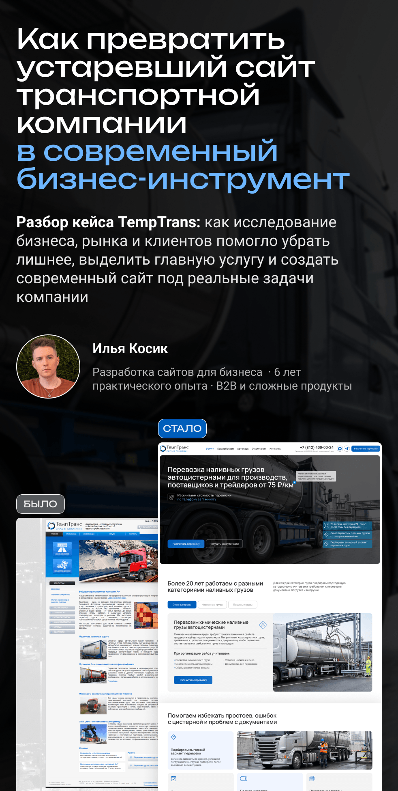

Результат моей работы с логистической компанией TempTrans
Открыть PDF
Илья Косик
Разработка сайтов для бизнеса · 6 лет практического опыта · B2B и сложные продукты
Листайте вниз, чтобы изучить презентацию.
